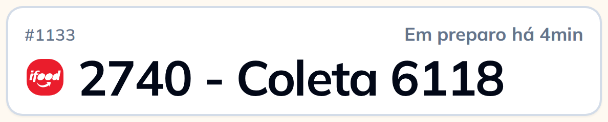
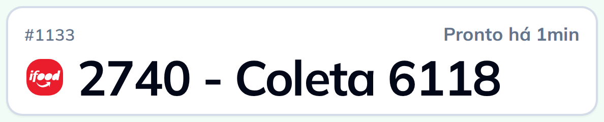

Quando a cozinha marca o pedido como pronto, ele salta para o outro lado no mesmo instante. E o painel é só leitura: ninguém muda situação, atribui entregador nem cancela pedido por ali.
Em preparo

Pronto
